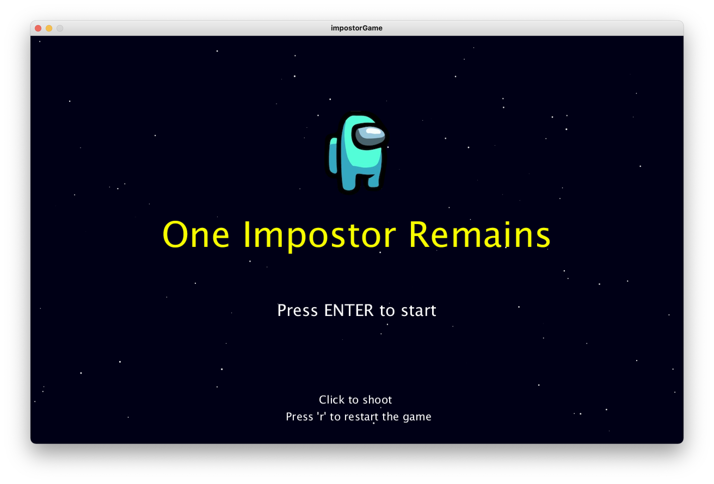

Patrik ChrenkoI am a student of Computer Science Bsc. at City, University of London. I am very passionate about computing primarily on the software side. My previous programming experience and skills are quite limited, though I did use Python during IGCSE and also learned some basics of Java for the IB. Outside of school I enjoy playing golf and football and also discovering what is new in the car and tech industries. |
||
|
|
||
Bootcamp 2020: ImpostorMy first programming project, concluding the 2 week Programming Bootcamp at City (2020). This Processing project demonstrates a comprehensive understanding of the use of classes, methods, arrays and randomness. In this game, features, such as the background and every character, are randomized both in terms of position and their movement. These characters are stored in arrays, so it is easy to control the characters collectively. Classes and methods are used to shorten the amount of code in the core of the program and to have all the relevant code in one place. I have also tried to apply a range of other skills obtained in the bootcamp, such as using sounds and images. The game is currently rather simple and could be developed to, for example, include more impostors in higher levels, or use an external text file to save usernames and levels reached as a sort of leaderboard feature. Check out the code on Github: https://github.com/ipatpro/adbt183.git | ||
|  | ||